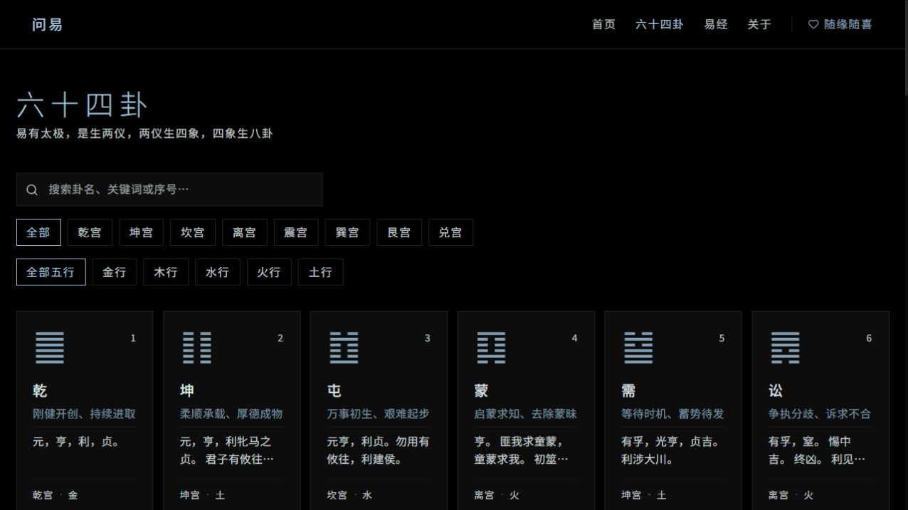

问易 / Wenyi
An old text. A new encounter.

A space between asking and exploring.
An interactive reading of the I Ching: ask a question, explore a hexagram, or follow your curiosity through a library of sixty-four possibilities.
Wenyi offers two ways into the same body of text: a question-led random selection, and a browsable hexagram library. Both lead into a shared reading experience.
- MY ROLE
- Vibe coding
- TECH STACK
- React, TypeScript, Vite, Tailwind CSS
Sixty-four starting points.
Search by name, keyword or number, then narrow the library by palace and element. Hexagram symbols, names and short texts form a consistent card rhythm.

Ask
Enter a question on the homepage.
Explore
Draw a hexagram or browse the library.
Read
Continue into text and related hexagrams.
Less noise. More room to read.
A near-black canvas and pale blue typography give the homepage a restrained atmosphere. The question field remains the primary action, with browsing close at hand.